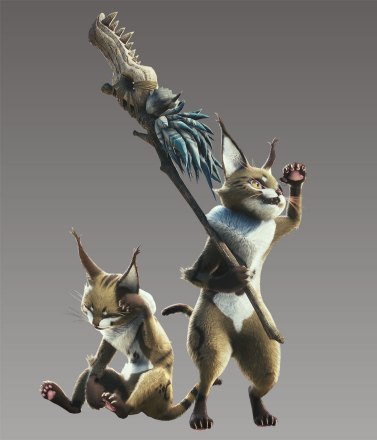

| 艾露猫 | 随从艾露猫是与猎人签订契约，辅助狩猎、见习猎人的艾露猫。他会以攻击、采集、回复等各种方式帮助猎人。在游戏开始时建立的随从艾露猫会与玩家角色共同行动。 |
个人感受猫猫就是超级可靠的伙伴，尤其是带了激励乐器的猫猫，可以有效防止我自己产生错误，从而导致猫车。 | |
|  | 兽人族德特尔 | 所谓的德特尔是类似艾露猫，栖息在新大陆上的兽人族。
他们在各地形成部族。在原野部族有着密切交流的德特尔，会以随从们的身分辅助玩家。每个部族的辅助能力不同。
与德特尔们的友好度越高，提供的辅助会更高级，也能进行“以物易物”交易 |
个人觉得森林虫笼族最有用，可以帮忙控制怪物，有效增加输出的机会，尤其是麻痹陷阱，简直是神中神。 |
| 小型怪物盟友 | 与德特尔密切交流后，随从艾露猫会变得能与部份怪物交涉。
交涉成功后，怪物会暂时辅助狩猎。
每一个密切交流的德特尔的部族可交涉的怪物有所不同。 |
每个地图的跑腿小能手，但是不能自由控制这一点不好，不像崛起的牙猎犬，有待加强。但是游戏停止更新，还是期待下一作。 | |
| 悠哉随从 | 其他猎人的随从艾露猫有时会出现在原野上。
他们也会以随从们的身份辅助狩猎。
领取公会名片，并登记到名片清单后，赠送名片的猎人的随从艾露猫有时会以“悠哉随从”身份登场。
有交情的猎人的随从艾露猫可能会来辅助狩猎。 |
真的悠哉，就是不知道我家的猫猫会不会偷跑出去给别人打工。 |